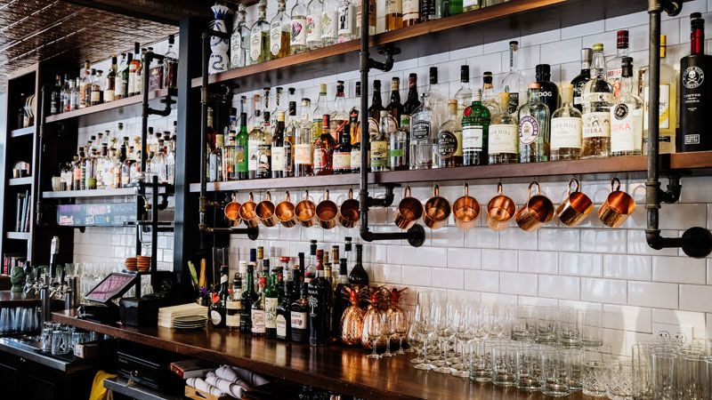

غذاهای طبیعی غنی از آهن
آهن در بدن چندین عملکرد مهم دارد. مهمترین آنها انتقال اکسیژن به صورت بخشی از سلول های قرمز خون به سراسر بدن است. آهن یک ماده مغذی اصلی است و باید از طریق تغذیه به بدن برسد. مقداری که باید روزانه مصرف شود (DV) هیجده میلی گرم است. در این مقاله غذا هایی را به شما معرفی می کنیم که غنی از آهن هستند و در صورتی که کمبود آهن دارید می توانید در برنامه غذایی خود بگنجانید. مقدار آهنی که بدن تان جذب می کند کمی بستگی به مقدار ذخیره شده آن در بدن دارد. کمبود آهن زمانی اتفاق می افتد که مقدار آهنی که دریافت می کنید خیلی کمتر از مقداری باشد که مصرف می کنید.
صدف ها خوشمزه و مغذی هستند. تمام صدف ها غنی از آهن هستند اما صدفهای دو کفه ای، صدف های چروک و صدف های سیاه به ویژه منابع خوبی از آهن هستند. برای مثال، مصرف ۳۰ گرم صدف دوکفه ای حاوی ۳۰ گرم آهن است که ۱۷ درصد از مقدار مورد نیاز روزانه می باشد. اما مقدار آهن موجود در صدف های دو کفه به میزان زیادی متغیر است و بعضی از انواع آن ها ممکن است حاوی مقدار کمی آهن باشند.
اسفناج ، منبع آهن
مصرف چند کالری اسفناج می تواند فواید بسیاری برای سلامتی داشته باشد. حدود ۳.۵ اونس یا ۱۰۰ گرم اسفناج خام حاوی ۲.۷ میلی گرم آهن یا ۱۵ درصد از مقدار نیاز روزانه بدن به آهن است. اگرچه آهن موجود در اسفناج غیرهم است که خیلی خوب جذب نمی شود اما اسفناج همچنین غنی از ویتامین C است. این موضوع مهم است زیرا ویتامین c به طور قابل توجهی جذب آهن را بالا میبرد. اسفناج همچنین سرشار از آنتی اکسیدان هایی به نام کاروتنوئیدها هستند که میتوانند خطر سرطان را کاهش دهند، میزان تورم را کمتر کند و از چشمانتان در برابر بیماری ها محافظت کند. مصرف اسفناج و دیگر برگهای سبز همراه با روغن به بدن کمک میکنند که کاروتنوئیدها را جذب کند. بنابراین حتماً روغن های سالمی مانند روغن زیتون را همراه با اسفناج مصرف کنید.پ

علاوه بر این مطالعات نشان داده اند که لوبیاها و دیگر حبوبات می توانند تورم را در افراد مبتلا به دیابت کاهش دهند. حبوبات همچنین میتوانند خطر ابتلا به بیماری های قلبی را در افراد مبتلا به سندروم متابولیک کاهش دهند. حبوبات ممکن است در کاهش وزن نیز موثر باشند. آنها غنی از فیبر محلول هستند که حس سیر بودن را افزایش و در نتیجه مصرف کالری را کاهش میدهند. در یک مطالعه نشان داده شد که یک برنامه غذایی سرشار از فیبر که شامل لوبیاها است به اندازه یک برنامه غذایی با کربوهیدرات کم در کاهش وزن موثر است. به منظور حداکثر سازی جذب آهن، لوبیاها را همراه با غذاهایی مصرف کنید که ویتامین C بالایی دارند، مانند سیب زمینی، سبزیجات و مرکبات. علاوه بر این مطالعات نشان داده اند که لوبیاها و دیگر حبوبات می توانند تورم را در افراد مبتلا به دیابت کاهش دهند. حبوبات همچنین میتوانند خطر ابتلا به بیماری های قلبی را در افراد مبتلا به سندروم متابولیک کاهش دهند. حبوبات ممکن است در کاهش وزن نیز موثر باشند. آنها غنی از فیبر محلول هستند که حس سیر بودن را افزایش و در نتیجه مصرف کالری را کاهش میدهند. در یک مطالعه نشان داده شد که یک برنامه غذایی سرشار از فیبر که شامل لوبیاها است به اندازه یک برنامه غذایی با کربوهیدرات کم در کاهش وزن موثر است. به منظور حداکثر سازی جذب آهن، لوبیاها را همراه با غذاهایی مصرف کنید که ویتامین C بالایی دارند، مانند سیب زمینی، سبزیجات و مرکبات.

صحبت مدیر در مورد مقاله
یک فنجان یا ۱۹۸ گرم عدس پخته شده ۳۷ درصد از نیاز روزانه بدن به آهن را فراهم میکند. لوبیا همچنین سرشار از فولیک اسید، منیزیم، پتاسیم و فیبر هستند و حتی می توانند به کاهش وزن کمک کنند.